Este proyecto está protegido
Circadia
Un compañero de sueño y recuperación para personal de enfermería con turnos rotativos. Parte del turno real, es calmado y no presiona: sin puntuaciones, sin rachas y sin notificaciones por defecto.
Rol
Formato
Año
Equipo
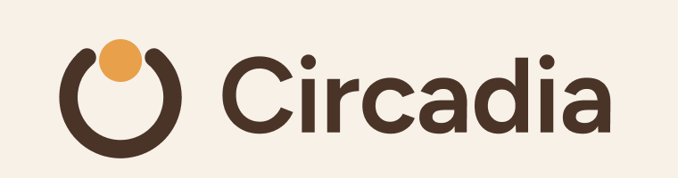
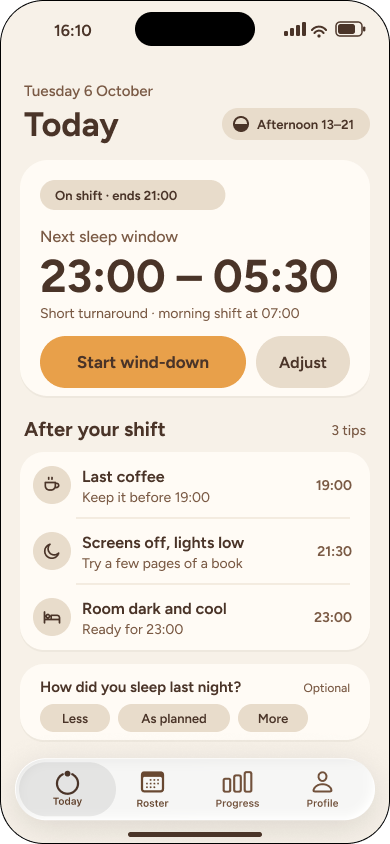
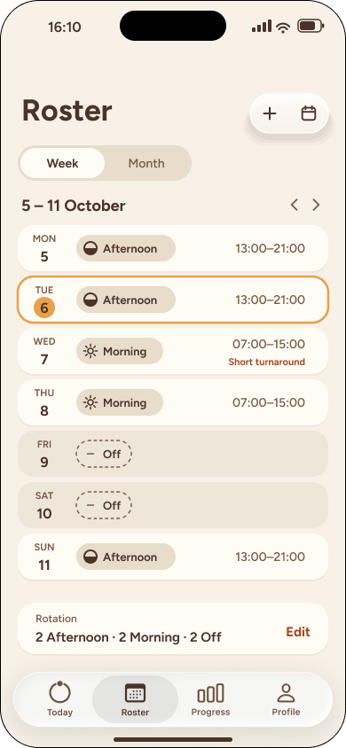
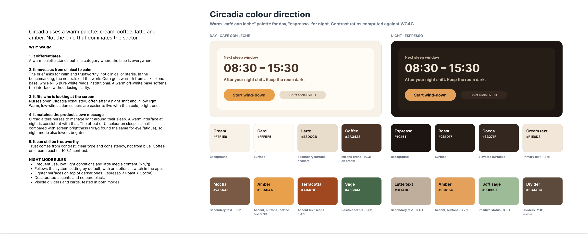
Un compañero de sueño para quienes trabajan por turnos
Circadia es una startup en fase inicial que desarrolla apoyo para el sueño y la recuperación de personas con turnos rotativos, empezando por enfermeras de hospital. Los turnos rotativos alteran el ritmo circadiano, y eso se traduce en burnout, errores médicos y abandono de la profesión: un problema que los hospitales pagan cada vez más por resolver.
La app debía ayudar a una enfermera a…
Una ventana de sueño personalizada
Guía simple y accionable
Deuda de sueño y tendencia de recuperación
La tarea era diseñar una app móvil en la que una enfermera conecte o introduzca su roster y reciba una guía de sueño construida a su alrededor. Las usuarias principales son enfermeras de hospital con turnos de 8 a 12 horas (rotaciones de día y noche). No existía marca, así que tenía que definir una que se leyera calmada y fiable, no clínica ni estéril: una herramienta que se consulta agotada, no una app de estilo de vida.
Además, Circadia exploraba en paralelo dos vías de distribución —vender a los presupuestos de bienestar y salud laboral de los hospitales (B2B2C) o ir directo a las enfermeras (B2C)—, ambas abiertas, y pedía tener una opinión al respecto.
Qué pedía el reto
Entregables obligatorios
- Benchmark básico de 2-3 apps de salud existentes
- Dirección de marca aproximada: logo o símbolo, color principal, color de acento y una nota sobre tipografía o tono
- Arquitectura de información de la app
- 3-4 wireframes de media fidelidad con los flujos principales (onboarding o entrada de turnos y dashboard, obligatorios)
- 2 páginas en alta fidelidad a elegir
- Una presentación en Loom de menos de 5 minutos
Reglas del juego
- Herramienta: Figma
- Alcance de unas 4 horas: se evalúa como si hubiera durado 4 horas
- No perderse en investigación profunda de personas: explicitar supuestos y avanzar
- Si se usan benchmarks, decir qué se toma de ellos
- Explicar dónde ayudó la IA, dónde estorbó y dónde la corregí
Apartado opcional
Cubrí todo lo que pedía el reto, incluido el apartado opcional. Esta página recoge ese trabajo tal y como lo hice en Figma.
Mi enfoque
Partir del turno real
Validar pronto
Calma: pull, no push
Más allá del sueño, este reto me permitió empatizar con el día a día del personal de enfermería y poner el foco en su salud mental: una herramienta que acompaña sin juzgar ni presionar a personas para las que el cansancio es el estado por defecto.
Los horarios, fechas y consejos que aparecen en las pantallas son datos de ejemplo.
Un reto acotado a unas 4 horas
Dividí el reto en bloques con minutos asignados (240 en total) para decidir qué merecía más tiempo y qué se quedaba en una versión mínima. El tiempo real se pasó un poco —solo la dirección de marca llevó 35 minutos en lugar de 25—, pero mantuve cada bloque acotado para que el resultado pudiera valorarse como si hubiera sido en 4 horas.
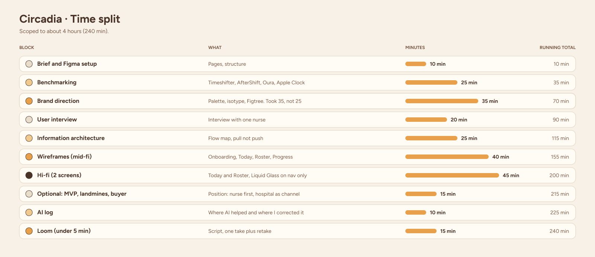
Reparto del tiempo: 240 minutos en total, con el mayor bloque dedicado al diseño de alta fidelidad.
Qué hacen bien (y mal) las apps de turnos y sueño
El reto pedía analizar 2-3 apps de salud existentes (Rise, Oura, Whoop, RISE Science u otras a elección). Elegí Timeshifter, AfterShift y Oura —las dos primeras centradas en el trabajo por turnos—, además de mirar Apple Clock, a partir de fichas de App Store, páginas de ayuda oficiales y unas pocas reseñas de usuarios. Para cada app anoté qué tomar prestado y qué evitar.
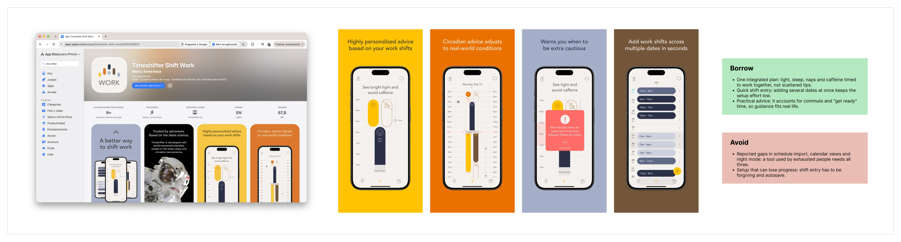
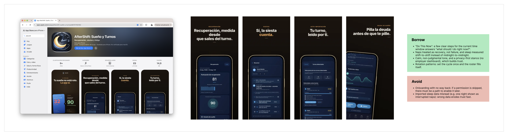
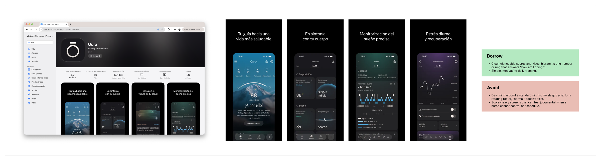
Timeshifter, AfterShift y Oura: capturas y conclusiones de qué tomar prestado y qué evitar.
Principios de diseño
Una enfermera abriría Circadia después del turno, con poca luz y poca energía: la fatiga es el estado por defecto, no un caso límite. De ahí salieron siete principios y un criterio para el modo oscuro.
1. Reducir la carga innecesaria
2. Valores por defecto antes que entrada manual
3. Patrones familiares
4. Lo prioritario primero
5. Visuales calmados
6. Notificaciones con mesura
7. Privacidad visible, no escondida
Modo oscuro
Principios frente al benchmark
Contrasté cada app con los principios de Circadia: qué hace bien, dónde se queda corta y dónde no hay evidencia.
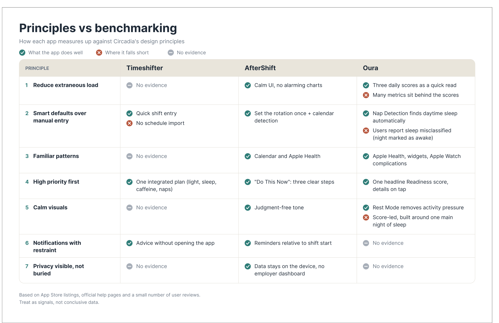
Buenas prácticas para Circadia
Destilé el benchmark, junto con NN/g y WCAG para accesibilidad, en diez buenas prácticas: qué aplicar, de dónde tomarlo, qué evitar y en qué pantalla se refleja.
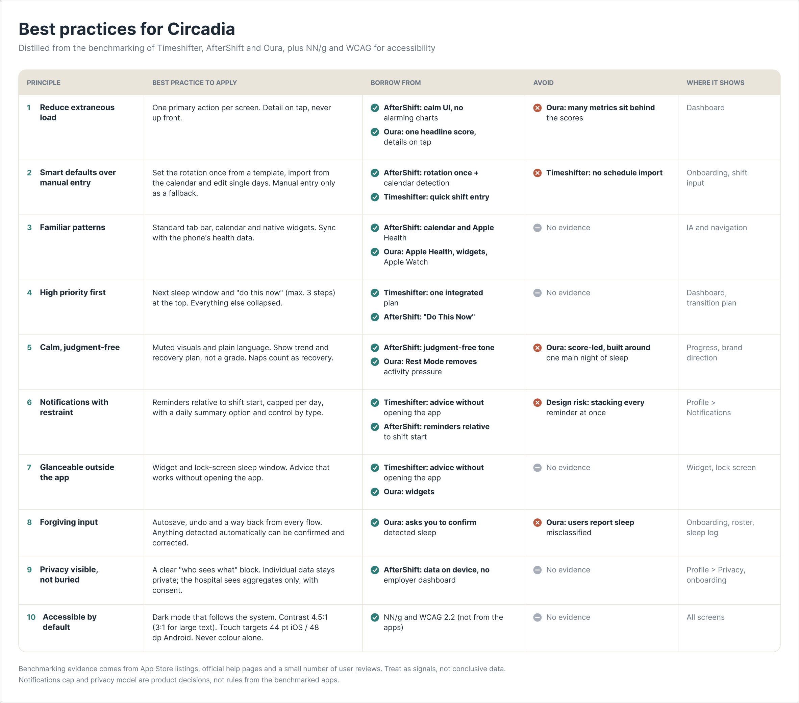
La evidencia del benchmark procede de fichas de App Store, páginas de ayuda y pocas reseñas: son señales, no datos concluyentes. El límite de notificaciones y el modelo de privacidad son decisiones de producto, no reglas de las apps analizadas.
Una conversación que cambió el diseño
Hablé con una enfermera de hospital en España con rotación fija de 2 tardes, 2 mañanas y 2 días libres. Fue una única conversación con un contacto cercano, así que la trato como hipótesis de partida y no como patrón: confianza baja y posible sesgo de cortesía.
La transición más dura
Control sobre su atención
Consejos prácticos, no datos
Siete conclusiones (a tratar como hipótesis)
1. El problema es el tiempo, no la información
2. El roster se configura una vez
3. Quiere respuestas, no datos
4. Control sobre su atención
5. La confianza pasa por el empleador
6. La poca urgencia esconde un dolor concreto
7. Las rotaciones reales difieren de las oficiales
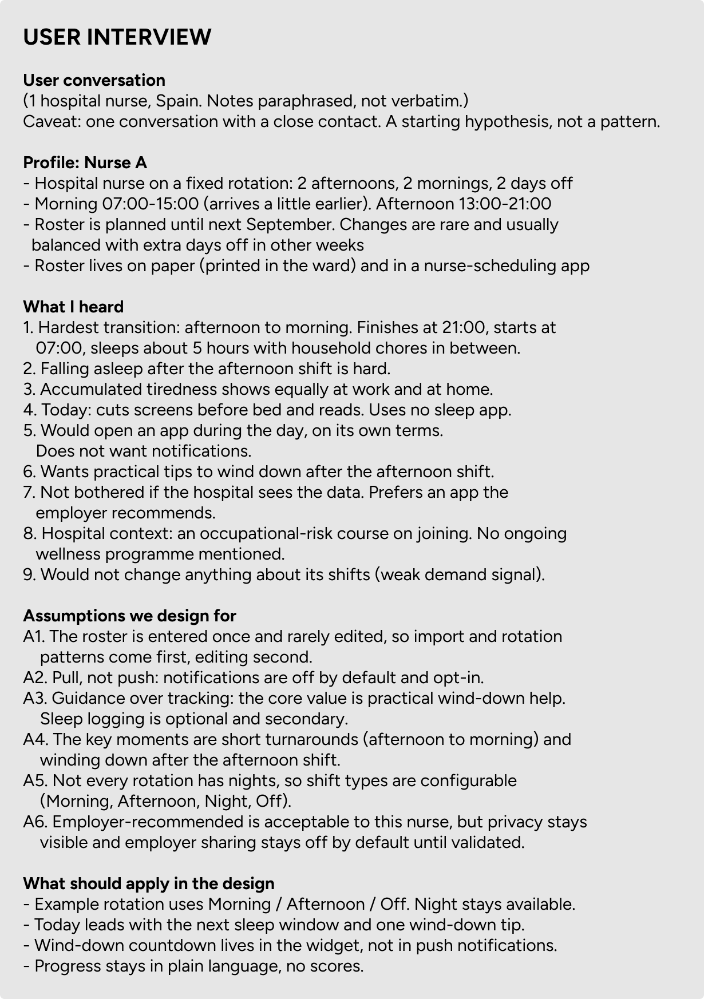
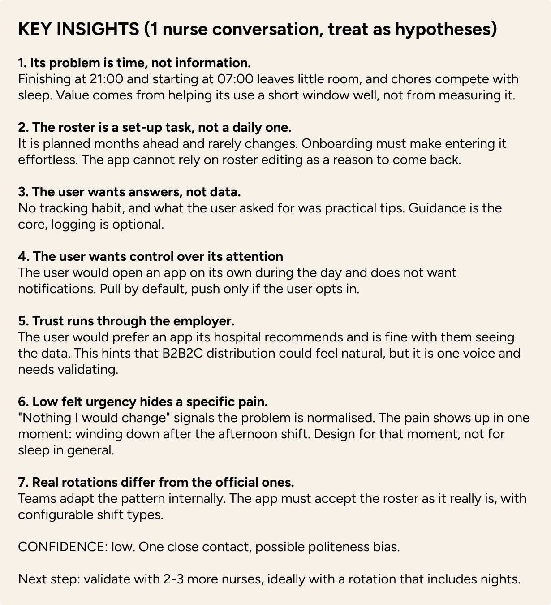
Notas de la entrevista y conclusiones clave, tal y como las documenté (notas parafraseadas, no literales).
Lo que cambió en el diseño
La entrevista desmontó una suposición: el ejemplo de rotación con noches no era la realidad de esta persona. Cambié la rotación de ejemplo a Mañana / Tarde / Libre (la noche sigue disponible) y rehice los wireframes y la arquitectura de información. Today empieza por la próxima ventana de sueño y un consejo para desconectar; la cuenta atrás vive en el widget, no en notificaciones push; y Progress se queda en lenguaje llano, sin puntuaciones.
Siguiente paso: validar con 2-3 enfermeras más, idealmente con una rotación que incluya noches.
Una marca cálida en un sector azul
Analicé la identidad de Timeshifter, AfterShift y Oura (estilo y tono, paleta, pros y contras). Timeshifter transmite autoridad científica pero poca calidez; AfterShift es calmada y honesta pero sin autoridad institucional; Oura es sobria, aunque con un aire premium de estilo de vida que el reto pedía evitar.
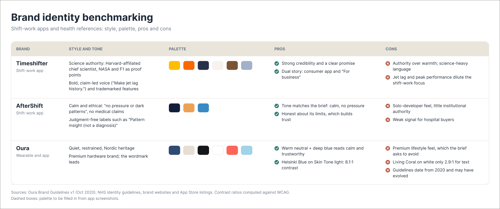
Dirección de color: cálida, no azul
Circadia usa una paleta cálida —crema, café, latte y ámbar— en lugar del azul que domina el sector: «café con leche» para el día y «espresso» para la noche. Acepté el riesgo de que un marrón cálido se lea más como estilo de vida que como clínico.
Diferencia
De clínico a calmado
Encaja con quien mira la pantalla
Coherente con el mensaje
Puede inspirar confianza
Reglas para el modo noche: sigue el ajuste del sistema, superficies más claras sobre las oscuras (Espresso < Roast < Cocoa), acentos desaturados, sin negro puro y con divisores y tarjetas visibles.
Sistema de marca
El isotipo «sol en el hueco» (de seis conceptos explorados), Figtree como tipografía (de tres pares probados), reglas de uso del logotipo, escala tipográfica, componentes de interfaz y una voz tranquila, clara y nunca insistente: una herramienta, no un coach. Es una app de bienestar, sin diagnósticos ni afirmaciones médicas.
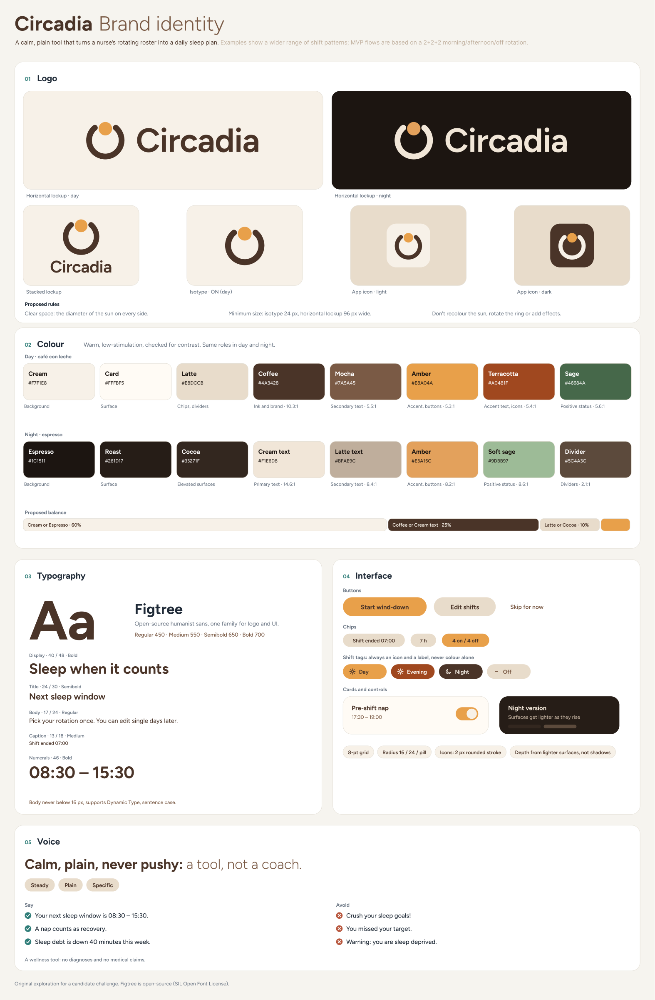
Un mapa de flujo para una app calmada
El mapa organiza la app en un onboarding y cuatro pestañas: Today, Roster, Progress y Profile. En azul, las pantallas principales; en ámbar, las decisiones que salieron de la entrevista y del riesgo B2B2C.
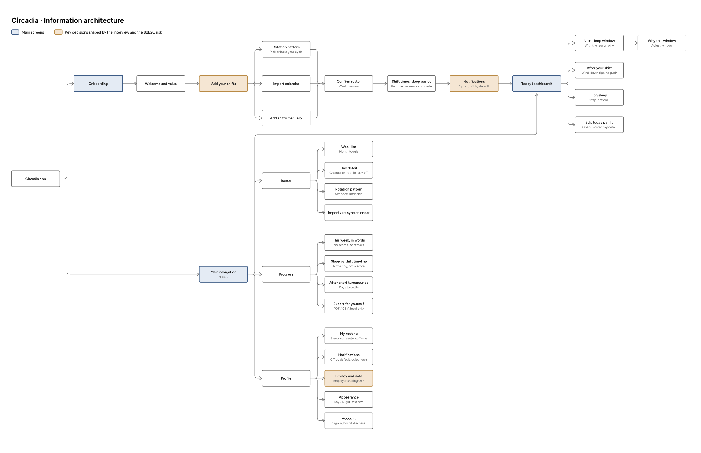
Introducir el roster una vez
Today primero
Privacidad visible
De cajas grises a contenido real
Wireframes de baja fidelidad
Cajas grises y etiquetas para decidir layout y jerarquía, sin marca ni color. Cuatro pantallas —onboarding, Today, Roster y Progress— hechas dos veces: antes y después de la entrevista.
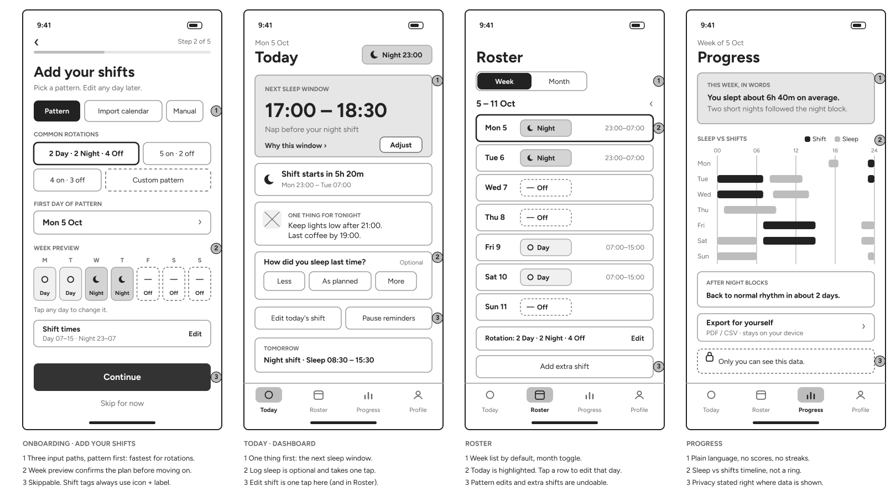
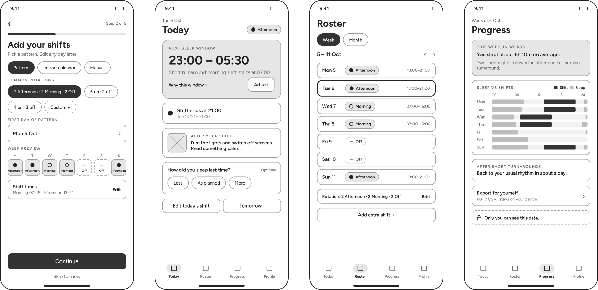
Primera versión (con una rotación de día y noche) y versión tras la entrevista (mañana, tarde y libre).
Onboarding
Today
Roster
Progress
Wireframes de media fidelidad
Estructura con contenido real y el color de marca aplicado con moderación: onboarding, Today, Roster y Progress.
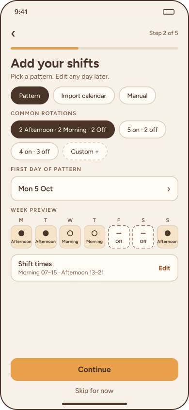
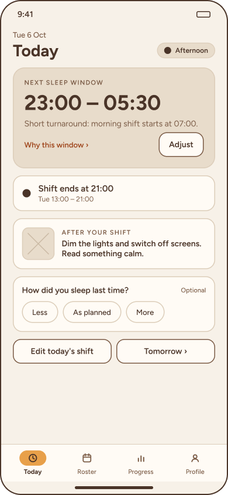
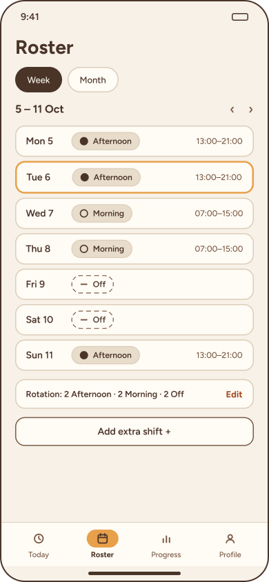
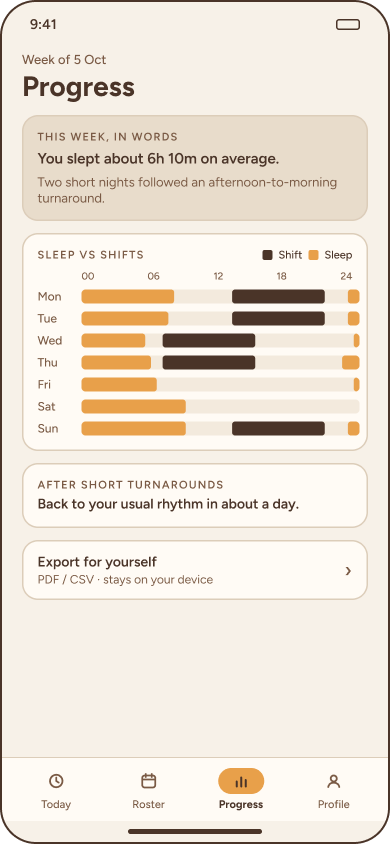
Today y Roster
Dos pantallas en alta fidelidad, Today y Roster, con la marca aplicada y Liquid Glass de Apple solo en la capa de navegación (barra de pestañas y controles superiores), nunca en el contenido.
Hi-fi 1 · Today
Hay que decirle a la persona cuándo dormir. La próxima ventana de sueño es el elemento más grande de la pantalla, con su motivo al lado (turnaround corto, turno de mañana a las 07:00). Debajo, tres consejos breves para desconectar tras el turno; registrar el sueño es opcional y lleva un toque.
- Pull, no push: nada aquí envía notificaciones; se abre cuando se quiere, que es lo que pidió la persona entrevistada.
- Calma y claridad: sin puntuaciones, sin rachas, sin alertas rojas.
- La etiqueta de turno usa icono y texto, nunca solo color. Las tarjetas son sólidas y usan la paleta de marca.
- Liquid Glass solo en la navegación. El texto sobre crema y latte mantiene contraste WCAG AA.
Nota: horarios y consejos son datos de ejemplo.
Hi-fi 2 · Roster
El roster lo gobierna todo, así que aquí es donde se introduce la información. Muestra la semana de un vistazo: hoy resaltado, cada turno como icono, etiqueta y horas, y los días libres claramente más discretos. Un aviso de «Short turnaround» marca el paso de tarde a mañana, el momento más duro para la persona entrevistada.
- Lista semanal por defecto y vista mensual a un toque.
- La rotación se define una vez y se edita desde un solo sitio («2 Afternoon · 2 Morning · 2 Off»), porque los turnos se planifican con meses de antelación y rara vez cambian.
- Añadir un turno extra e importar el calendario viven en un control de cristal arriba, separado del contenido.
- Cualquier edición se puede deshacer y nunca borra el resto del plan.
Nota: fechas y turnos son datos de ejemplo de una conversación con un usuario.
Componentes
Una biblioteca mínima de componentes: botones primario y secundario, chips, etiquetas de turno (Mañana, Tarde, Noche y Libre, siempre con icono) y barra de pestañas con sus cuatro estados. Primero en wireframe y después con la marca.
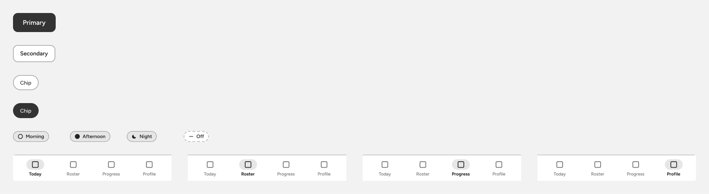
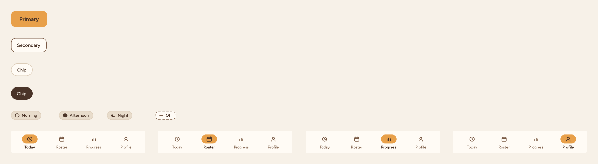
Componentes en wireframe y con la marca aplicada.
Alcance, riesgos y comprador
El apartado opcional del reto: pensar más allá de las pantallas, con el alcance como proyecto real, un calendario hasta un MVP en App Store y Play Store, las minas que podrían dinamitarlo y quién es el comprador real. El objetivo del MVP es demostrar que una enfermera abre la app por iniciativa propia y encuentra útil la ventana de sueño en las dos primeras semanas.
Dentro del MVP
- Añadir turnos: patrón de rotación, importar calendario y edición manual
- Today: próxima ventana de sueño, su motivo y unos consejos para desconectar
- Roster: lista semanal, rotación y aviso de «short turnaround»
- Nota de privacidad clara: los datos se quedan en el dispositivo
- Ventana de sueño basada en reglas (sin modelo de IA ni datos de wearables)
- Widget en la pantalla de inicio
Fuera del MVP (por ahora)
- Panel para el empleador o cualquier dato compartido con el hospital
- Integraciones con wearables
- Notificaciones push activadas por defecto
- Puntuaciones, rachas y programas de coaching
- Gráficos de progreso (solo un resumen semanal en palabras, si da tiempo)
Calendario de ejemplo
- Semanas 1-2: entrada del roster y Today con la lógica de la ventana de sueño
- Semanas 3-4: Roster, widget, onboarding y nota de privacidad
- Semanas 5-6: pruebas con 5-8 enfermeras de distintas rotaciones, correcciones y lanzamiento a un piloto
Minas a evitar
Confianza en el empleador
Afirmaciones médicas
Protección de datos
Guía equivocada
Exactitud del roster
Poca urgencia percibida
Compra hospitalaria
Dependencia de una sola rotación
¿Quién es el comprador?
Enfermera (B2C)
- Decide si se usa cada día
- Feedback rápido y sin procesos de compra
- Es probable una baja disposición a pagar (sin probar)
- Difícil de captar sin un canal
Hospital (B2B2C)
- Existe presupuesto en salud laboral y bienestar (por validar)
- Distribución: la persona entrevistada prefiere una app recomendada por el empleador
- Venta lenta y riesgo de que se perciba como herramienta de control
- Quiere métricas, lo que aleja el producto de la enfermera
Mi posición (hipótesis)
Diseñar primero para la enfermera y tratar al hospital como canal y comprador posterior.
Siguiente validación
- Entrevistar a 5-8 enfermeras más (otras rotaciones, incluidas las de noche)
- Preguntar por la disposición a pagar y la confianza en una app recomendada por el empleador
- Hablar con alguien de salud laboral sobre presupuestos y compras
- Pedir una opinión legal sobre datos y afirmaciones médicas
Dónde ayudó la IA y dónde la corregí
Usé Claude y ChatGPT para investigar, sintetizar y plantear opciones; Claude con el conector de Figma para construir wireframes directamente en Figma; la búsqueda web para el benchmark y para contrastar fuentes; y scripts de Python escritos por Claude para calcular contrastes y exportar SVG y PNG. Las entrevistas, las decisiones y las correcciones fueron mías.
Dónde me ahorró tiempo
- Filtrar el briefing y destacar las acciones principales
- Planificar el tiempo de cada etapa
- Convertir las notas en bruto de la entrevista en una lista limpia de conclusiones
- Comparar principios de diseño con los temas de investigación
- Comparar muchos productos y fuentes con rapidez
- Proponer opciones sobre las que reaccionar (6 conceptos de isotipo y 3 pares tipográficos)
Dónde la corregí
- Suposición errónea: el ejemplo de rotación incluía noches. La entrevista mostró otro patrón real (2 tardes, 2 mañanas, 2 libres) y cambié los wireframes y la IA.
- Fidelidad: el briefing pedía media fidelidad y la IA ya daba mockups de «alta fidelidad» con un solo prompt.
- Tipografías: los SVG dependían de una fuente instalada y mostraban la equivocada.
- Figma: la IA duplicó una página y se perdieron los wireframes; los reconstruí desde cero. El conector alcanzó su límite y la alta fidelidad se hizo en SVG.
- Liquid Glass: no se puede reproducir exactamente en Figma, así que usé los componentes originales del kit de UI de Apple que encontré entre los recursos de Figma.
- Fuentes: una página de Apple no se pudo leer y un blog sobre contraste era una fuente débil; lo contrasté con otras y lo traté como señal.
Lo que decidí yo
- Qué apps analizar en el benchmark
- Preparar y hacer la investigación con una enfermera real
- Una paleta marrón cálida en lugar del azul de la categoría, aceptando el riesgo de que parezca más estilo de vida que clínica
- El isotipo «sol en el hueco» y Figtree como tipografía
- Un tono calmado, sin puntuaciones, sin rachas y sin notificaciones push
- Liquid Glass solo en la capa de navegación, no en el contenido
- Today y Roster como las dos pantallas en alta fidelidad
Qué me dejó este reto
Lo que más me llevo es la empatía con el rol del personal de enfermería: entender cómo se organizan sus turnos, qué les agota y qué necesitan en el poco tiempo que tienen para descansar. Eso me llevó a poner la salud mental en el centro del diseño: calma, sin presión y con la persona al mando.
También aprendí a trabajar con un tiempo muy acotado: decidir qué merece profundidad (la entrevista, la marca, dos pantallas en alta fidelidad) y dejar explícito qué queda como hipótesis por validar, empezando por contrastar lo aprendido con más enfermeras.